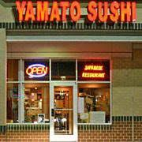
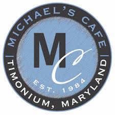
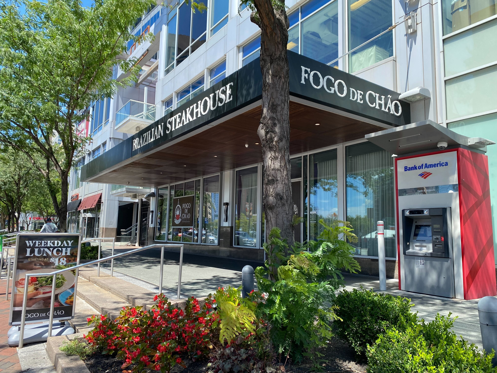

Reena Bitar
My favorite resturants!

Yamato Sushi in Timonium, MD is my favorite sushi resturant. From its homey vibe to their
amazing sushi this will always be the first place I recommend. My favorite roll is the Oriole Roll.
Address: 51 W Aylesbury Rd, Timonium, MD 21093

Michael's Cafe in Timonium, MD is the perfect lunch spot. They have a great selection of appitizers, sandwiches, plates.
I love the Apple Walnut Salad.
Address: 2119 York Rd, Timonium, MD 21093

If you're looking for a good brunch place, First Watch in Timonium, MD is the place to go. They have a great selection of
breakfast and lunch items as well as juices and coffees. My favorite is the florentine eggs benedict.
Address: 1238 Putty Hill Ave Suite 15, Towson, MD 21286

If you're in the mood for Mexican food, Taco Bravo in Towson, MD is the place to go. They have a great selection of tacos, burritos, and quesadillas.
My favorite are the steak tacos with their homemade guacamole and chips.
Address: 31 E Padonia Rd, Timonium, MD 21093

Fogo de Chao is a favorite among my family because not only is there amazing steak, going there is an amazing experience.
It is a brazilian style steakhouse where they bring you different cuts of meat and you can eat as much as you want.
My favorite is the bottom sirloin and the picanha.
Address: 600 E Pratt St, Baltimore, MD 21202